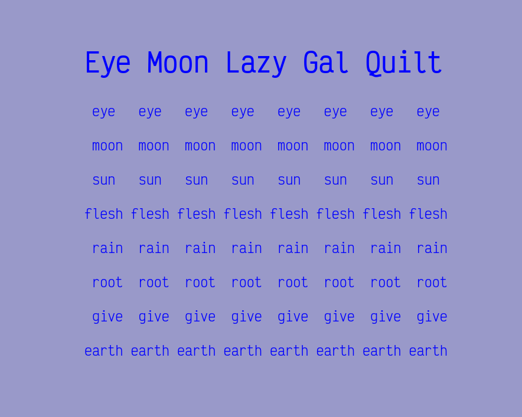

Lee Tusman
↩ Everyday
<
>
Title: Daily Quilt-Poem
Year: 2025
Medium: Daily poem, software (Lua/JS)
URL: daily-quilt-poem↩
Description:
A daily quilt-poem generator as a prototype. Re-using the code base from my Quilt Poems project. I've not exhausted my ideas on this yet! I adapted my code from my previous Lua-based quilt poems generator, working with the Lua library Fengari to implement in the browser.

 ©opyleft
©opyleft